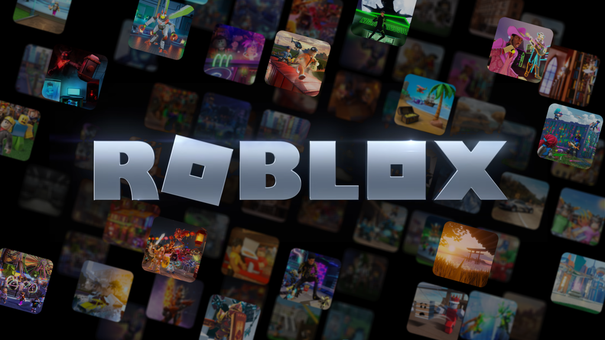

Brookhaven
Brookhaven é um jogo de role-playing (RP) onde os jogadores podem viver em uma cidade virtual cheia de possibilidades. Você pode comprar e decorar casas, dirigir carros, trabalhar em diferentes profissões e interagir com outros jogadores.
Anime Defenders
Outro título que merece estar entre os melhores jogos Roblox de 2024 é o Anime Defenders, é um jogo de defesa baseado em animes. Onde os jogadores podem invocar seus heróis favoritos para proteger suas bases contra inimigos.
02 Março 2024
Provavelmente a forma mais "válida" e indicada para ganhar Robux na plataforma, é ao criar jogos dentro do próprio Roblox.
22 Abril 2024
O Roblox chegou ao PS 4 e PS 5 em OUT/2023. O anúncio aconteceu durante a Roblox Developer Conference (RDC), sediada em San Franscisco.
Roblox é uma plataforma em que os jogadores podem criar games baseados em sua criatividade, além de explorar as invenções de outros usuários gratuitamente. Apesar de ser um sucesso mundial, com milhões de jogadores ativos por mês e milhares de games na biblioteca, a origem de Roblox ainda é desconhecida para alguns.
Roblox foi desenvolvido por David Baszucki e Erick Cassel com um objetivo: transformar o aprendizado de crianças pela física em algo que despertasse o interesse dos jovens. Inicialmente, a plataforma contava com formas de criar objetos e ensinar através da mecânica de criação. Chamado DynaBlocks, a primeira versão do game foi projetada em 2004 e, um ano depois de seu desenvolvimento, resolveram mudar para o nome atual, sendo o mesmo da Roblox Corporation. Uma versão baseada no conceito original de Roblox está disponível para os jogadores testarem na própria plataforma. Baszucki ainda explica que o conceito de Roblox é mais antigo do que isso, sendo baseado em outro software usado para física em 2D, criado em 1989.
Roblox é uma plataforma de jogos que conta com mais de 200 milhões de usuários ativos mensalmente, sendo a maioria formada por crianças. Esses títulos são criados e publicados pelos próprios usuários, que podem até mesmo ganhar dinheiro ao incluir microtransações pagas com Robux, a moeda virtual do serviço.
Caso o jogo faça sucesso, o criador ainda vai ter mais um obstáculo: fazer as pessoas gastarem Robux em microtransações.
Sim, o download e o acesso à plataforma são gratuitos.
Não é necessário pagar para criar uma conta ou entrar em um dos jogos. Por outro lado, o aplicativo permite compras internas a partir do uso de Robux, a moeda virtual do jogo adquirida a partir de dinheiro real.
O Robux é usado para comprar itens e roupas na loja.
A plataforma pode ser baixada gratuitamente no Android, iOS, macOS, Windows e nos consoles Xbox Series S e Xbox Series X.
Alguns jogos incluem a função crossplatform, que permite encontrar e jogar com usuários de diferentes plataformas.
Um jogo fácil e divertido para todas as idades!